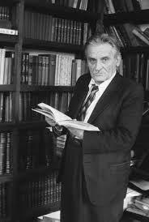

Yuri Olesha (1899-1960)
- Modernism - focus on language, use of skaz (Bakhtin would call it "double-voicedness" when the author's voice dominates the voice of the character) (New Soviet Man, who is like a machine (Andrei Babichev and Volodya Makarov) vs. vulnerable/self-conscious narrator), and instantiation of 1920s ornamentalist prose
- Modernism - ideology of alienation from traditional morality
- Envy (1927), in dialogue with Notes from Underground; against Communist positivism
- Defamiliarizing writing
- Anxiety of belonging - being human, not the social machine
- Arkadii Belinkov - Сдача и гибель советского интеллигента (Madrid, 1976)
- From Odessa - like Babel; some scholars refer to modernist writers as "юго-западная школа" (Babel, Olesha, Kataev, Il'f Petrov) - Mark Sokolyansky
